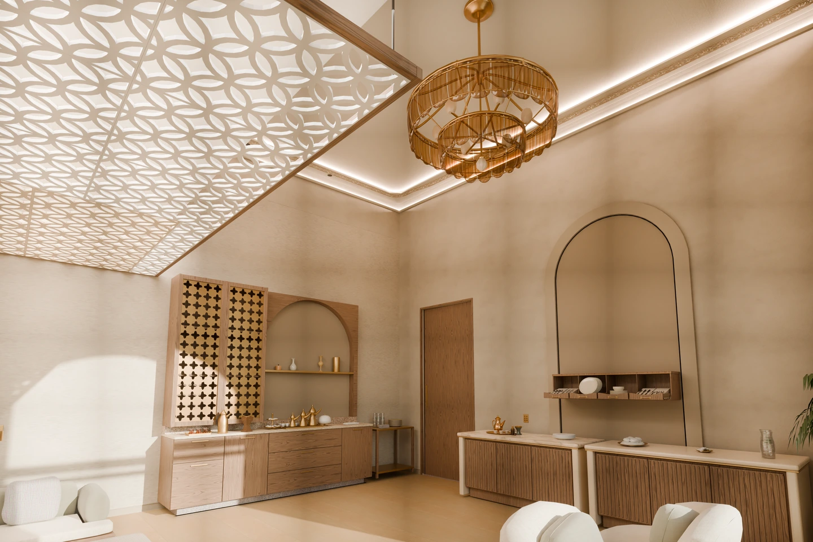
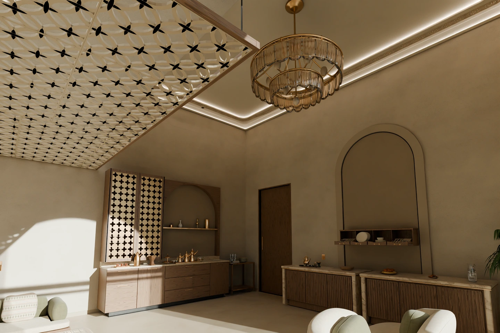

البوفيه والثريا




اللقطتان من المراجعة 13، بنفس موضع الكاميرا والعدسة. فتح رندر Blender السابق من المراجعة 12


اللقطتان من المراجعة 13، بنفس موضع الكاميرا والعدسة. فتح رندر Blender السابق من المراجعة 12